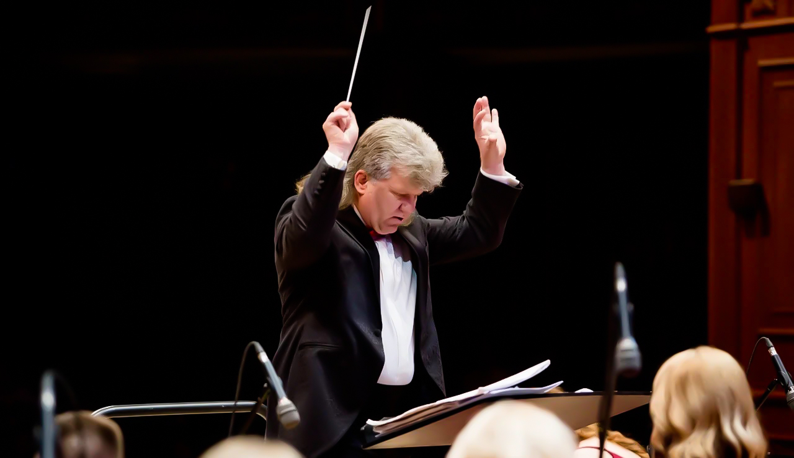

Владимир
Аленичев
официальный сайт
Discover Scroll

Владимир АЛЕНИЧЕВ
Биография
Выпускник Московского государственного университета культуры по специальности «Дирижёр оркестра русских народных инструментов, преподаватель оркестровых дисциплин».
Дирижёр оркестра «Тула» с 2005 года, с 2014 г. —художественный руководитель и главный дирижёр.
За время работы в коллективе подготовил более 70 концертных программ. Инициатор проведения ежегодного областного фестиваля музыкального творчества детей и юношества «Ступеньки мастерства» и Всероссийского фестиваля дирижёров и солистов профессиональных оркестров русских народных инструментов «Серебряные струны» с традиционным участием возглавляемого им оркестра
Награды
Федеральные
- Почётная грамота Министерства образования и науки Российской Федерации (2008 г.);
- Благодарность Министра культуры Российской Федерации (2009 г.);
- Почётная грамота Министерства культуры Российской Федерации (2012 г.);
- Почётная грамота Российского профсоюза работников культуры (2013 г.).
Областные
- Благодарственное письмо Главного федерального инспектора в Тульской области аппарата полномочного представителя Президента РФ в ЦФО (2013 г.);
- Благодарности Губернатора Тульской области (2013 г., 2018 г. и 2019 г.);
- Медаль «Трудовая доблесть» III степени за выдающиеся заслуги перед Тульской областью, достигнутые трудовые успехи в работе в области культуры (2016 г.).